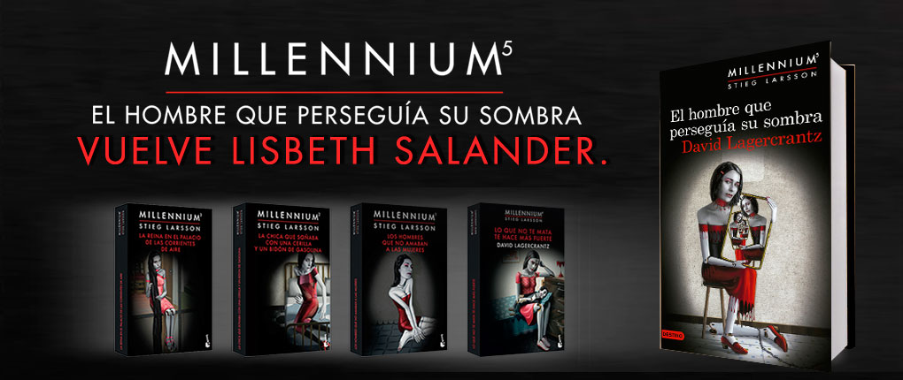
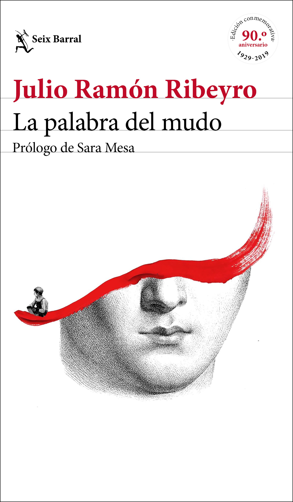
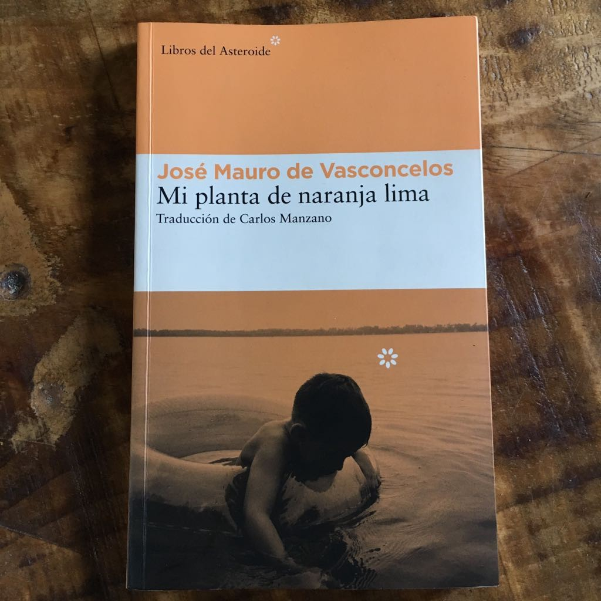
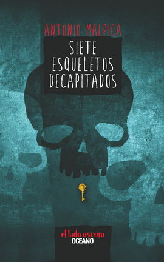

Tras otro abominable verano con los Dursley, Harry se dispone a iniciar el cuarto curso en Hogwarts, la famosa escuela de magia y hechicería.
A sus catorce años, a Harry le gustaría ser un joven mago como los demás y dedicarse a aprender nuevos sortilegios, encontrarse con sus amigos Ron y Hermione y asistir con ellos a los Mundiales de quidditch.
Sin embargo, al llegar al colegio le espera una gran sorpresa que lo obligará a enfrentarse a los desafíos más temibles de toda su vida.
Si logra superarlos, habrá demostrado que ya no es un niño y que está preparado para vivir las nuevas y emocionantes experiencias que el futuro le depara.

Harriet Vanger desapareció hace treinta y seis años en una isla sueca propiedad de su poderosa familia.
A pesar del despliegue policial, no se encontró ni rastro de la muchacha. ¿Se escapó? ¿Fue secuestrada? ¿Asesinada?.
El caso está cerrado y los detalles olvidados. Pero su tío Henrik Vanger, un empresario retirado, vive obsesionado con resolver el misterio antes de morir.
En las paredes de su estudio cuelgan cuarenta y tres flores secas y enmarcadas. Las primeras siete fueron regalos de su sobrina;
las otras llegaron puntualmente para su cumpleaños, de forma anónima, desde que Harriet desapareció.
Mikael Blomkvist acepta el extraño encargo de Vanger de retomar la búsqueda de su sobrina.
Periodista de investigación y alma de la revista Millennium, dedicada a sacar a la luz los trapos sucios de la política
y las finanzas, Blomkvist está vigilado y encausado por una querella por difamación y calumnia presentada
por un gran grupo industrial que amenaza con arruinar su carrera y su reputación. Contará con la colaboración
inesperada de Lisbeth Salander, una peculiar investigadora privada, socialmente inadaptada, tatuada y llena de piercings,
y con extraordinarias e insólitas cualidades.

La palabra del mudo, compuesto por casi un centenar de cuentos, se encarga de dar voz a aquellos personajes que en la vida cotidiana están privados de ella: los marginados, los olvidados, los condenados a una existencia soterrada. La producción cuentística de Ribeyro transmite los anhelos, arrebatos y angustias de sus protagonistas a través de una prosa limpia y un estilo alejado de artificios,
ofreciendo uno de los más grandes ejemplos de la narrativa breve en el mundo occidental.

Portadas
Un niño de 5 años de verdad y 6 de mentira, vive en un pueblo en condiciones muy humildes. Zezé es un niño poeta, con mucha imaginación, inteligencia, carisma y muchas ganas de superarse y ser feliz.
Una gran amistad lo ayuda a conocer la ternura y la importancia de la educación y la empatía.

Portadas
Una escalofriante novela de terror situada en la Ciudad de México de hoy que nos permitirá conocer también el lado más noble de algunos de sus habitantes.
¿Cuánto miedo puedes soportar, Mendhoza? Sergio no lo sabe.
Pronto descubrirá que es necesario deberá conocer el verdadero terror para resolver el misterio de unos horribles asesinatos, comprender su destino y, a la vez, salvar su propia vida.

Bookset